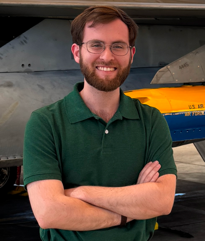

David Fantin
I’m an applied mathematician. I like problems where careful numerical methods meet messy real data.

About
My background is in physics, mathematics, and computer science. I finished an M.S. in Applied Mathematics at UT Dallas in May 2026, where I focused on numerical linear algebra and image analysis. My research so far has ranged from space physics data to medical image analysis.
Research
-
Solar wind electrons at L1
Python, WIND spacecraft data, 2021 to 2023
An analysis of electron velocity distributions, aimed at identifying what accelerates the solar wind.
-
Finding blood vessels in retinal images
MATLAB, neural networks, Fall 2025
A comparison of two neural networks against a classical image-processing method.
Notes
Short writeups on things I’m learning. Read the notes.
Contact
Email is the best way to reach me. You can also find me on LinkedIn and GitHub.